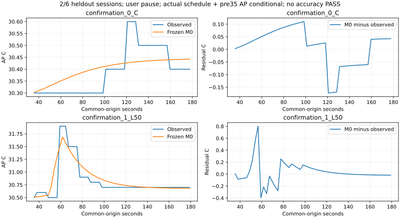

새7세션과 과거 적격 C를 분리한다. 남은 확인4는 별도 block이다. 세 번째 확인은 staging 중 사용자 중지로 앱이 시작되지 않았다. timeout0이며 모형/연결 실패로 판정하지 않는다.
AP는 실제 일정·부하 전 AP 조건부 예측이다. J는 기존 W식의 전체120초 외삽 진단이다. 정확도 PASS·정책 순위·strict/default 승격 없음.
| 단계 | 조건 | 상태 | 시작 AP°C | 관측 J | 예측−관측 J | AP MAE°C | 최대°C |
|---|---|---|---|---|---|---|---|
| development | C | eligible_imported_from_stopped_v1 | 29.7 | 132.48271586729322 | 14.569294650257035 | 0.06727352829497711 | 0.3857498694045951 |
| development | L35 | eligible_partial_study_descriptive | 29.6 | 146.1518121158964 | 9.501889323485898 | 0.1448914859681203 | 0.8468492834827686 |
| development | L65 | eligible_partial_study_descriptive | 30 | 148.03208168318864 | 7.615901929942368 | 0.11219950022245836 | 0.8932262898415857 |
| development | L65 | eligible_partial_study_descriptive | 30.4 | 143.12141529683407 | 12.577957531689464 | 0.19117291181638768 | 0.7231528495077946 |
| development | L35 | eligible_partial_study_descriptive | 30.4 | 141.34809772248377 | 14.287023782291925 | 0.24387870713482404 | 0.43036961242779626 |
| development | C | eligible_partial_study_descriptive | 30.3 | 126.58883745298294 | 20.463173064567314 | 0.29972325408093964 | 0.39169542346706265 |
| confirmation | C | eligible_partial_study_descriptive | 30.2 | 140.8445749518073 | 6.207435565742969 | 0.06166108783892558 | 0.17304342973431375 |
| confirmation | L50 | eligible_partial_study_descriptive | 30.5 | 145.54685385339187 | 10.080427883003608 | 0.10399833644482825 | 0.8024981631436354 |
| confirmation | SPLIT_DELAY30 | incomplete | 미확인/미시도 | 미확인/미시도 | 미확인/미시도 | 미확인/미시도 | 미확인/미시도 |
| confirmation | SPLIT_DELAY30 | not_attempted | 미확인/미시도 | 미확인/미시도 | 미확인/미시도 | 미확인/미시도 | 미확인/미시도 |
| confirmation | L50 | not_attempted | 미확인/미시도 | 미확인/미시도 | 미확인/미시도 | 미확인/미시도 | 미확인/미시도 |
| confirmation | C | not_attempted | 미확인/미시도 | 미확인/미시도 | 미확인/미시도 | 미확인/미시도 | 미확인/미시도 |

소비·상태 | 12세션 분모 CSV | 유효 AP | 개발 선택 | 통합 보고서